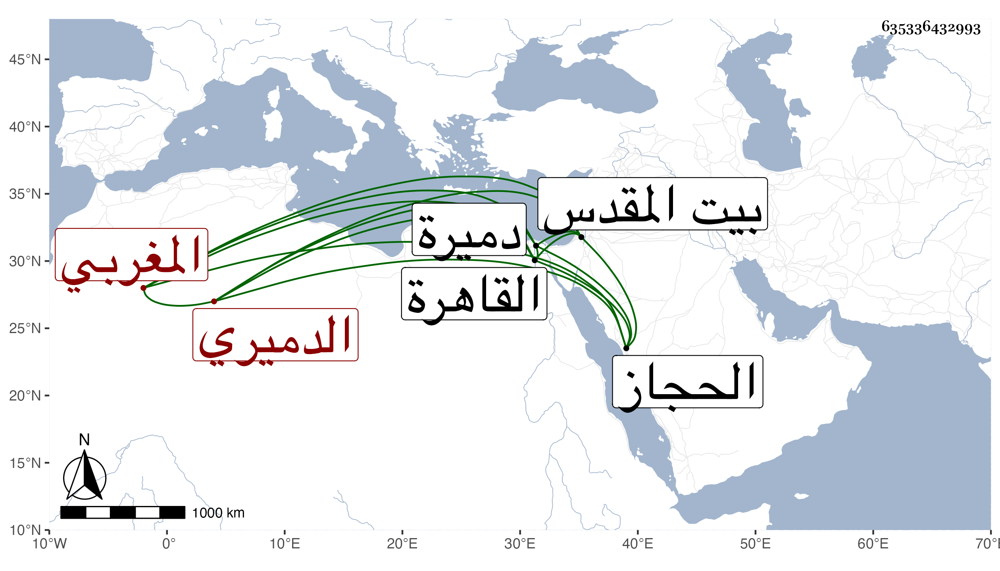

0902Sakhawi.DawLamic.ITO20230111-ara1.EIS1600.635336432993
Biography ID: 635336432993
541
علي بن إبراهيم بن علي المغربي الأصل ثم الدميري ويعرف بالأديب . ولد سنة سبعين وسبعمائة تقريبا في دميرة القبلية وأسلمه والده إلى الشيخ علي ابن الوحش يؤدبه فعلمه الخط وأقرأه إلى سورة الصافات ثم سافر به أبوه إلى الحجاز وهو صغير فلما عاد علمه صنعة الأدم فارتزق منها إلى آخر وقت وحج سبع مرات وزار القدس وتردد إلى القاهرة مرارا وسكن بها عند أخيه القاضي شهاب الدين أحمد ابن الإسكافي ولقيه ابن فهد والبقاعي في سنة ثمان وثلاين بدميرة فكتبا عنه قوله :
| بكى الغيم ضحك الروض | ورأيت في ذا دلائل |
| والعجب أسقاه دموعو | فضحك من دمع سائل |
